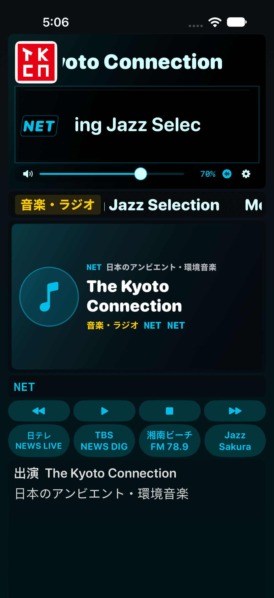

Build 91 잡음 제보로 설치를 권장하지 않습니다.
게인 보정은 유지하고 음성 출력 연결을 수정한 Build 92 시험판을 확인하세요. 실기기에서 잡음이 해소됐는지는 확인이 필요합니다.
아래는 Build 91의 과거 검증 기록입니다. 실제 아이폰의 잡음 제보를 대체하지 않습니다.
iOS 17.0 이상. SideStore에서 서명해 설치합니다. 기존 앱을 삭제하지 않고 같은 Apple 계정으로 업데이트하세요.
NET·한국 방송의 PCM 음량 보정 경로를 추가했습니다. 안드로이드와 같은 목표 음량·피크 제한·고음 보정을 사용하며, iOS 27 전용 오디오 탭에 의존하지 않습니다. 기존 앱 화면과 일본 radiko·NAS 재생 경로는 유지합니다.

실제 iPhone 시뮬레이터 캡처입니다. 프로그램명은 검사용 예시이며, 긴 제목은 표시창 안에서 가로로 흐릅니다.
검증: 계산 테스트·iOS 27 시뮬레이터 재생 테스트. 사용 중인 iOS 26.7.1 실기기의 설치·음량·영상 동기화는 별도 확인이 필요합니다. 모든 실시간 방송을 실기기에서 측정한 결과는 아닙니다.
SHA-25697ccaf7b8280d8907999868ba2639bba0ff8cbeb24facaab12764eb09132c2dd